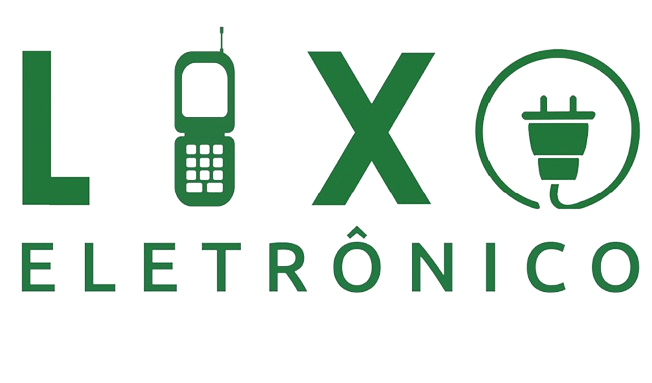

O que é lixo eletrônico ?
O lixo eletrônico, também conhecido como e-lixo ou resíduo eletrônico, refere-se a qualquer dispositivo elétrico ou eletrônico descartado, que não está mais em condições de uso ou que se tornou obsoleto. Isso inclui uma ampla gama de dispositivos, como celulares, computadores, tablets, televisores, eletrodomésticos, câmeras digitais, entre outros.
O aumento da tecnologia e a constante inovação no campo eletrônico resultaram em um aumento significativo na quantidade de lixo eletrônico produzido em todo o mundo. Infelizmente, muitas vezes, esse tipo de resíduo é descartado de maneira inadequada, representando sérios riscos para o meio ambiente e para a saúde humana.
Por que é importante descartar corretamente ?
O lixo eletrônico é um dos tipos de resíduos que mais crescem no mundo. Sem um descarte adequado, esses dispositivos podem acabar em aterros sanitários, ocupando espaço precioso e contribuindo para a poluição do solo e da água. Descartar eletrônicos corretamente ajuda a reduzir o acúmulo de lixo e promove uma gestão mais sustentável dos resíduos.
Em resumo, descartar corretamente o lixo eletrônico é essencial para proteger o meio ambiente, preservar a saúde pública, promover a reciclagem de recursos e evitar o acúmulo descontrolado de resíduos. É uma responsabilidade de todos garantir que nossos dispositivos eletrônicos sejam descartados de maneira segura e sustentável.

Como descartar corretamente ?
Existem várias maneiras de descartar corretamente o lixo eletrônico, uma delas é os pontos de coletas especializados. Muitas cidades oferecem locais específicos para o descarte de lixo eletrônico, como postos de coleta ou centros de reciclagem. Esses locais são equipados para receber e reciclar eletrônicos de maneira apropriada.
Outro método são os programas de reciclagem. Algumas empresas e organizações promovem programas de reciclagem de eletrônicos, onde você pode entregar seus dispositivos antigos para serem reciclados. Procure por programas locais ou nacionais que aceitem eletrônicos para reciclagem.